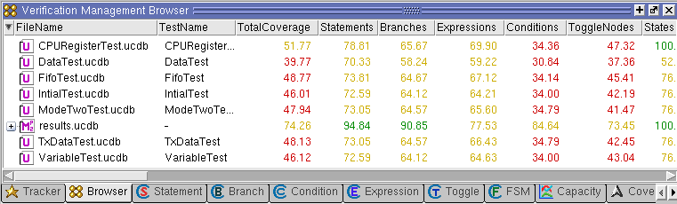

You can view
both UCDB (.ucdb)
and rank result (.rank)
files in the Verification Browser window.
Procedure
- Open the Verification Management
window:
- Add files to the Browser using
one of the following three methods:
Right-click in the window
and select Add File. Select the desired .ucdb files
from the list that appears in the Add File(s) dialog
box.
When
the window is active, select from the menu bar
of the Main window. Select the desired .ucdb files
from the list that appears in the Add File(s) dialog box.
At the vsim command prompt,
execute the add testbrowser command,
which accepts UCDB and rank result files as arguments. For example,
add testbrowser test.ucdb
Results
The Verification Browser window appears,
similar to Figure 1.
Figure 1. Test Data in Verification
Browser Window
The coverage numbers in the Browser
window are based on the Total Coverage calculations described in
“Calculation of Total Coverage”, however all design roots are
taken into account and include all hierarchy underneath all design
roots. See “Coverage Calculation in the Browser Window”.